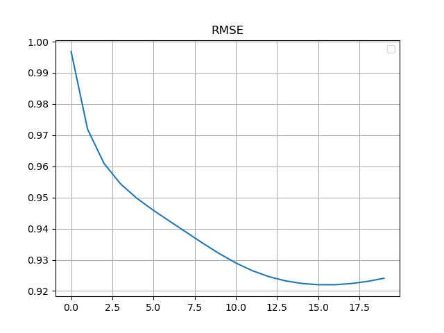
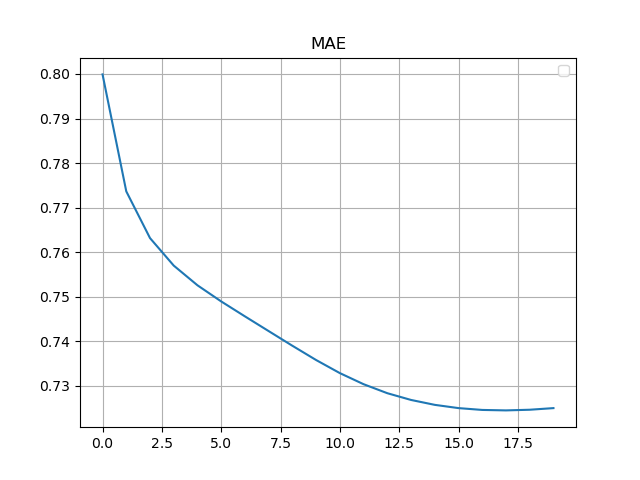

推荐系统核心技术之一是协同过滤技术, 协同过滤技术最常用的是矩阵分解 (Matrix Factorization, MF).
在隐语义模型 (Latent Factor Model, LFM) 中, 存在一些潜特征. Users 和 Items 是潜空间中的元素. 相似的元素在潜空间中的距离小.
原始矩阵通常描述 Users 和 Items 的关系, 如"评分", 也就和它们在潜空间中的距离矩阵.
将原始矩阵分解, 分解出的两个矩阵称隐因子矩阵, 即为 Users 和 Items 在潜空间中的位置.
推荐系统.
高维->低维;
具体实现和求解都很简洁, 预测的精度也比较好;
模型的可扩展性也非常优秀, 其基本思想也能广泛运用于各种场景中.
可解释性差;
冷启动问题(*Group-specific SVD 可在一定程度解决).
在很多实际的应用场景中, 只关注 top-k 的结果. 那么, 从上帝视角来看, 评价一个模型好坏的评测指标可以是 "top-k 的准确度".
考虑损失函数能否只计算 top-k' (k'表示一个可能与k, 迭代次数, 参数等有关的数值). 发现难以推导迭代公式. 搜集资料, 难以找到相关资料.
缺点：
- 补全
- 计算复杂度高
近似分解.
在 Funk-SVD 基础上加入偏置项.
优点: 考虑了 (Users 和 Items 的)偏差;
缺点: 冷启动问题.
在 BiasSVD 基础上考虑邻域(用户历史行为)影响.
使用用户的行为替代用户的喜好(用户隐因子矩阵).
解决冷启动问题. 需要"考虑"如何分组.
通过非线性神经架构推广了传统的矩阵分解算法. 发展中.
模型
r^ui=bui+qiTzu,zu=pu+∣N(u)∣−1/2j∈N(u)∑yj,bui=μ+bu+bi,N(u)={i∣(u,i)∈/D}.
损失函数
C=ui∑eui2+λ((j∈N(u)∑∣yj∣2)+(i∑∣qi∣2)+(u∑∣bu∣2)+(i∑∣bi∣2)),eui=rui−r^ui.
通过偏导获得递推式
∂buu∂eui∂buu∂Cbuu+∂bii∂eui∂bii∂Cbii+∂puf∂eui∂puf∂Cpuf+∂qif∂eui∂qif∂Cqif+∂yjf∂eui∂yjf∂Cyjf+R(u)=−1,=−2(eui−λbuu),=γ1(eui−λbuu);=−1,=−2(eui−λbii),=γ1(eui−λbii);=−qif,=−2(qifeui−λpuf),=γ2(qifeui−λpuf);=−zuf=−(puf+∣N(u)∣−1/2j∈N(u)∑yjf),=−2(zufeui−λqif),=γ2(zufeui−λqif);=−∣N(u)∣−1/2i∈R(u)∑qif,=−2(eui∣N(u)∣−1/2i∈R(u)∑qif−λyjf),=γ3(−λyjf+∣N(u)∣−1/2i∈R(u)∑euiqif);={i∣(u,i)∈D}.
搜索得知有 Python module surprise 中有推荐算法相关实现.
报错缺失安装依赖的一个名字很长的包(记不清名字了).
名字很长的包依赖的新版本 numba 安装失败, 因为它依赖旧版本 numpy.
降级 numpy, 依次安装成功, demo 运行成功.
此前已安装过 VS Build Tools, pip install surprise 仍报错需要 MSVC 14.0.
通过 VS Installer 安装 MSVC 14.0 后换了种方式报错, 报错库文件缺失.
搜索得到另一个基于 Pyrex (surprise 也是) 的 Python module 库的 GitHub Issue, 从其中一个 stackoverflow 链接得知需要安装 Windows SDK.
去 VS Installer 里安装最新 Windows 10 SDK, 又换了种方式报错.
去 VS Installer 里安装最新 MSVC 和所有 Windows 10 SDK, 再次安装成功, demo 运行成功.
数据集为 MovieLens-100k.


均为 n_factors=20, n_epochs=20, gamma=.007, lambda=.02, 未调用 GPU 加速. 根据 CPU 使用情况判断均以单线程为主.
| - |
surprise.SVDpp |
MySVDpp |
| RMSE |
0.9255 |
0.9279 |
| MAE |
0.7252 |
0.7283 |
| Time |
56s |
769s |
Error 较为接近, 但运行速度过慢.
考虑递推式
puf+=γ2(qifeui−λpuf),qif+=γ2(zufeui−λqif).
式中 f∈[0,F]∩N, 且需要对 ∀f∈[0,F]∩N 进行如上操作, 即有代码
for f in range(len(latent_factors)):
...
在代码实现中 ,P,Q 的实际定义类型为二维的 <class 'numpy.ndarray'>, puf,qif 即为 P[u, f], Q[i, f]. 考虑利用 numpy.ndarray 特性, 直接对一个向量进行线性计算:
P[u, :] += g2 * (err * Qi - l2 * Pu)
Q[i, :] += g2 * (err * Z - l2 * Qi)
numpy 底层为 C/C++, 常数比 Python 小很多.
同理, 其它线性或非线性计算也可以如此优化.
更新 P Q 前需要 .copy(), 考虑能否通过修改公式不复制.
原递推式简记为
p+=γ(qe−λp),
即
p′=p+γqe−γλp,
得
p=1−γλp′−γqe.
通过 p′ 得到 p 较为复杂, 开销反而比 .copy() 大.
MF 的 Wikipedia 页面;
Netflix Prize 比赛相关资料;
Youtube 公开的推荐算法相关资料;
Python module surprise 文档及源码.